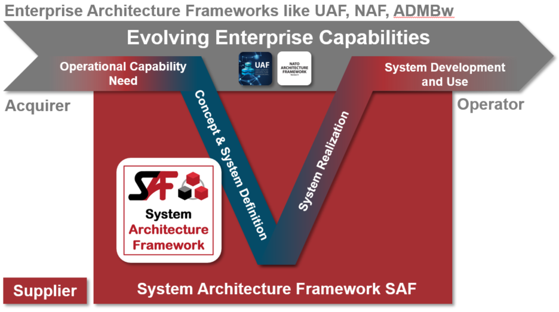

Inspired by the various enterprise architecture frameworks the System Architecture Framework (SAF) is a common, domain independent system architecture framework dedicated to support Model Based Systems Engineering (MBSE) of technical systems.
The SAF can be used stand-alone and also complementary to enterprise architecture frameworks. SAF starts where an enterprise architecture framework stops.

This site contains both documentation for users of SAF and developers of SAF. To understand how to use SAF, head over to Using SAF. To understand how we develop SAF, see Development Documentation. We always welcome contributions from our MBSE community to improve SAF, see how to contribute to SAF.
The System Architecture Framework Specification application is demonstrated using the Fire Forest Detection System (FFDS) example, courtesy of Tim Weilkiens. The Fire Forest Detection System example is based on the publication SYSMOD - The Systems Modeling Toolbox, 3rd edition Pragmatic MBSE with SysML, Tim Weilkiens
This documentation is for the main branch of SAF that reflects the current state of development and it is updated as required. See the change report for an information about major changes.
The following SAF releases are available, each of which is managed in a separate branch:
The SAF specification is implemented by 3 tool specific profiles which are available in separate github repositories: